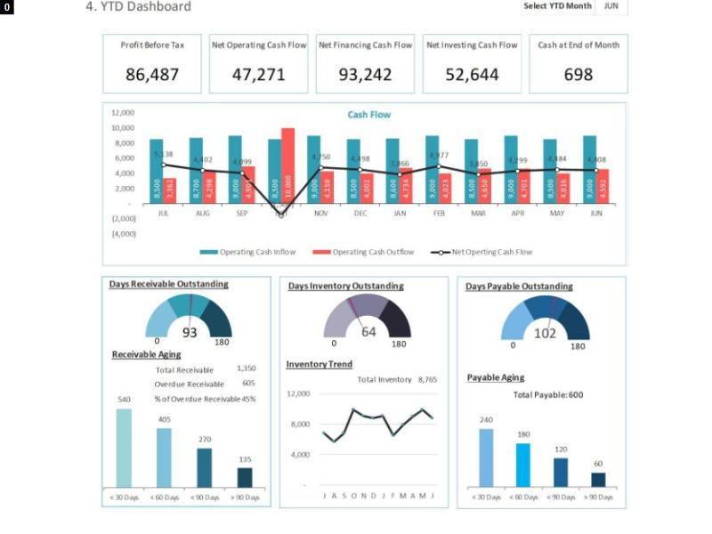

AdminA
Ba phương án, mỗi phương án bám một ảnh tham khảo trên Pinterest. Dạng bảng giữ đúng lưới đang chạy (mục × tháng, dòng Chênh lệch thu − chi ở đầu, nhóm Thu rồi Chi, Cộng kỳ); ba phương án khác nhau ở dạng biểu đồ và cách chuyển giữa hai dạng.
Số liệu là số thật trong DB dev: 47 phiếu đã thu, đã chi từ 01/08 đến 12/10/2026 (27 phiếu chi, 20 phiếu thu), cộng theo đúng luật của bao_cao_thu_chi.py (ngày thực chi, phiếu không có mục vào "Chưa phân loại"). Không có số nào giả định. Tháng 10 mới tới ngày 12 nên cột tháng 10 là nửa tháng.
Sửa theo góp ý 12/10/2026: bỏ hẳn "Chi tiền mặt từ 5 triệu" (cột của bảng, thẻ lọc nhanh, khối thanh ở B; khi code sẽ bỏ cả ở máy chủ và file Excel). Khối cơ cấu ở C có hai tab Cơ cấu mục chi | Cơ cấu mục thu, mỗi mục một màu.
frontend/src/pages/bao-cao-thu-chi/BaoCaoThuChiPage.tsx (lưới, 5 thẻ lọc nhanh, Lọc Hình thức và Mục, Theo mục | Theo người nhận, nộp, Xuất Excel) và NganThuChi.tsx (dải số từng tháng, tab Phiếu, tab Người nhận, chuyển mục).backend/app/services/bao_cao_thu_chi.py (cột kỳ theo tháng hoặc quý, gom dòng, đếm thẻ lọc, chênh lệch) và repositories/bao_cao_thu_chi_repo.py.bao-cao-thu-chi-khuon-cong-no.html (bản đang chạy), bao-cao-thu-chi-lam-lai-3-phuong-an.html (lần trước anh chọn phần Bảng của B), bao-cao-thu-chi-bang-nang-cap.html, bao-cao-thu-chi-3-phuong-an.html./api/bao-cao-thu-chi), không thêm phép tính mới ở máy chủ. Riêng dạng biểu đồ lấy đủ mọi dòng, không cắt trang.A. Cash Flow Analysis (mẫu Excel). Ba biểu đồ nhỏ xếp một hàng nằm ngay trên bảng tháng. Bảng gồm nhóm tiền vào có dòng cộng, nhóm tiền ra có dòng cộng, dòng chênh lệch ở đáy. Học được: biểu đồ là phần tóm tắt đặt trên bảng, không thay bảng.

B. YTD Dashboard. Một biểu đồ lớn ghép cột thu, cột chi theo tháng với đường chênh lệch, có ghi số trên từng cột. Phía dưới là ba khối nhỏ, mỗi khối là các thanh xếp từ lớn xuống nhỏ. Học được: một biểu đồ chính đọc ra cả ba con số mỗi tháng.
C. Finance Dashboard. Lưới 2 × 2: đường thu chi có ô số khi rê chuột, danh sách lãi lỗ, vòng cơ cấu chi có tỷ lệ phần trăm, cột thu so với chi. Học được: đặt danh sách kết quả kỳ cạnh biểu đồ để đọc số mà khỏi rê chuột.
Đã xem khoảng 45 ghim với ba từ khoá: finance dashboard, cash flow report dashboard table, financial report table. Phần lớn là bảng điều khiển tài chính cá nhân có thẻ số to. Ba ảnh trên là ba ảnh gần nhất với báo cáo thu chi theo mục × tháng.